Flexibility, design winters, heat pumps in the field and the solar programme
Four new pieces of modelling on data already in the project, 11 November 2026, all run on CPU.
Commands: flexibility, fetch-era5-timeseries, build-era5-long, design-winter,
heat-pump-field, solar-programme. Modules in code/src/sense_energy/analysis/
(flexibility.py, design_winter.py, heat_pump_field.py, solar_programme.py) and
data/era5_timeseries.py; tables in code/reports/<name>/; figures from
code/scripts/flexibility/.
What the page answers: what a site's load shape costs and what a battery or a solar array is worth against it; what a load forecast is worth in a decision; whether heat pumps fit under the connections in a cold winter and not only in 2023/24; what the estates returns say heat pumps did; and whether the funded hospital solar arrays can be seen from the meter.
New data: ERA5 hourly temperature from 1960 at the panel's 59 grid cells (Copernicus point time series; contains modified Copernicus Climate Change Service information), the list of NHS sites funded by Great British Energy (GOV.UK, Open Government Licence v3.0) and the 2025/26 estates return (NHS England, published 15 October 2026).
1. What the load shape costs (bill_shape_premium)
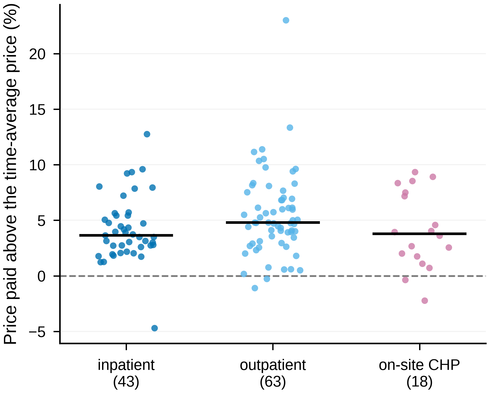
bill_shape_premium PDFEvery half-hour of 2024/25 priced at the Elexon market index (energy only, no network charges or levies), for the 124 sites with at least 90 % of the year metered.
- The panel: 118 GWh, £9.9 million a year at the wholesale index.
- The shape costs 4 %. The median site pays 4.3 % more per kWh than the time-average price, because it uses more in the dearer hours: 3.7 % at inpatient sites, 4.8 % at outpatient sites, 3.8 % for the import of the CHP sites. Five sites pay less than the average price (down to −4.7 %); the dearest shape pays 23 % more.
- The red band holds 10 % of the energy in 8.7 % of the hours (16:00–19:00 on working days): 12.4 GWh a year across the panel, so every penny per kWh of red-band charge is £124,000 a year.
Table: 30 rows
| site_code | site_name | group | fy | mwh | wholesale_cost_gbp | paid_p_kwh | shape_premium_pct | red_share_energy |
|---|---|---|---|---|---|---|---|---|
| RFSDA | Chesterfield Royal Hospital | inpatient | 2024/25 | 13506.55 | 1119391.86 | 8.29 | 2.75 | 0.1 |
| RFSDA | Chesterfield Royal Hospital | inpatient | 2025/26 | 13489.96 | 1054408.16 | 7.82 | 1.28 | 0.1 |
| RFSDA | Chesterfield Royal Hospital | inpatient | 2023/24 | 12772.01 | 1004556.33 | 7.87 | 1.18 | 0.1 |
| RQXM1 | Homerton University Hospital | on-site CHP | 2024/25 | 9644.59 | 791635.18 | 8.21 | 1.76 | 0.1 |
| RH801 | Royal Devon & Exeter Hospital (wonford) | on-site CHP | 2025/26 | 9589.25 | 747987.35 | 7.8 | 1.07 | 0.09 |
| RH801 | Royal Devon & Exeter Hospital (wonford) | on-site CHP | 2024/25 | 9344.6 | 751020.2 | 8.04 | -0.36 | 0.09 |
| RKB01 | University Hospital | on-site CHP | 2024/25 | 8753.71 | 765062.76 | 8.74 | 8.35 | 0.13 |
| RKB01 | University Hospital | on-site CHP | 2025/26 | 7975.75 | 618520.19 | 7.76 | 0.21 | 0.14 |
| RKB01 | University Hospital | on-site CHP | 2023/24 | 7529.13 | 620979.31 | 8.25 | 6.1 | 0.14 |
| RH801 | Royal Devon & Exeter Hospital (wonford) | on-site CHP | 2023/24 | 7446.14 | 596365.79 | 8.01 | 3.03 | 0.09 |
| RCB55 | York Hospital | on-site CHP | 2024/25 | 7331.82 | 633786.31 | 8.64 | 7.17 | 0.11 |
| RCB55 | York Hospital | on-site CHP | 2025/26 | 6685.9 | 525830.49 | 7.86 | 1.91 | 0.11 |
| R0A66 | North Manchester General Hospital | on-site CHP | 2024/25 | 6386.86 | 525516.86 | 8.23 | 2.02 | 0.09 |
| RXN02 | Royal Preston Hospital | on-site CHP | 2025/26 | 5957.54 | 467267.18 | 7.84 | 1.54 | 0.12 |
| R0A66 | North Manchester General Hospital | on-site CHP | 2025/26 | 5541.15 | 430373.4 | 7.77 | 0.7 | 0.1 |
| R0A66 | North Manchester General Hospital | on-site CHP | 2023/24 | 5375.16 | 425411.87 | 7.91 | 1.81 | 0.09 |
| RJC02 | Warwick Hospital | on-site CHP | 2023/24 | 4715.22 | 371913.74 | 7.89 | 1.44 | 0.11 |
| RD130 | Royal United Hospital | on-site CHP | 2024/25 | 4572.05 | 390183.4 | 8.53 | 3.95 | 0.14 |
| RXN02 | Royal Preston Hospital | on-site CHP | 2023/24 | 4058.79 | 333787.11 | 8.22 | 5.8 | 0.14 |
| RL131 | Robert Jones & Agnes Hunt Orthopaedic Hospital | on-site CHP | 2023/24 | 3871.18 | 319431 | 8.25 | 6.15 | 0.11 |
| RXN02 | Royal Preston Hospital | on-site CHP | 2024/25 | 3847.35 | 337972.83 | 8.78 | 8.91 | 0.14 |
| RJN71 | Macclesfield District General Hospital | on-site CHP | 2024/25 | 3660.23 | 307199.53 | 8.39 | 4.05 | 0.11 |
| RJN71 | Macclesfield District General Hospital | on-site CHP | 2025/26 | 3634.92 | 283475.4 | 7.8 | 1.05 | 0.11 |
| RKB03 | Hospital Of St Cross | inpatient | 2023/24 | 3553.14 | 279937.79 | 7.88 | 1.35 | 0.1 |
| RKB03 | Hospital Of St Cross | inpatient | 2024/25 | 3544.2 | 294607.99 | 8.31 | 3.04 | 0.1 |
| R0A09 | Trafford General Hospital | inpatient | 2023/24 | 3429.25 | 269586.46 | 7.86 | 1.13 | 0.1 |
| RL131 | Robert Jones & Agnes Hunt Orthopaedic Hospital | on-site CHP | 2025/26 | 3427.53 | 283996.25 | 8.29 | 7.15 | 0.09 |
| R0A09 | Trafford General Hospital | inpatient | 2024/25 | 3420.06 | 281875.66 | 8.24 | 2.18 | 0.1 |
| RKB03 | Hospital Of St Cross | inpatient | 2025/26 | 3282.29 | 257171.47 | 7.84 | 1.52 | 0.1 |
| RL131 | Robert Jones & Agnes Hunt Orthopaedic Hospital | on-site CHP | 2024/25 | 3239.75 | 283639.86 | 8.75 | 8.53 | 0.11 |
source: code/reports/flexibility/bill_anatomy.csv (30 rows shown)
2. What a battery earns (battery_value)
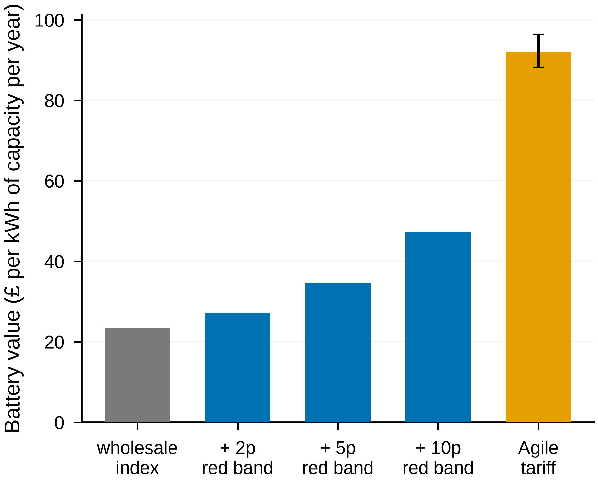
battery_value PDFA two-hour battery (round-trip efficiency 0.85) cycled each day against the day's prices by a linear programme, starting and ending empty. Price cases: the market index; the index plus a red-band unit charge of 2, 5 or 10 p/kWh; and the Octopus Agile tariff of each region, a published half-hourly retail tariff with its own evening adder. The red-band charges are scenario values: the real rates differ by network area and voltage and are not in the project. Perfect knowledge of the day's prices is exact for Agile (published the day before) and an upper bound for the index (known after delivery). No degradation cost.
interactive; source: code/reports/flexibility/battery_unit_annual.csv
- £23 per kWh of capacity a year on wholesale spreads (1.8 cycles a day), £27, £35 and £47 with a 2, 5 and 10 p red-band charge, £88–96 on Agile. Stable across the three years (wholesale £21–24).
- The tariff sets the value, not the site. The schedule depends on prices only. The site enters through the no-export limit: with a battery of 20 % of its mean demand, 24 of 134 sites would push more than 1 % of the discharge past their own load (median 4 %), ten of them CHP sites whose import is low when the plant runs.
- Break-even. A ten-year simple payback needs an installed cost below £235 per kWh on wholesale spreads, £350 with a 5 p red band, about £900 on an Agile-style tariff.
- Across the panel, a battery of 20 % of mean demand at every site is 7.5 MWh and earns £176,000 a year at the index, £259,000 with a 5 p red band.
- A load forecast is worth nothing here. Arbitrage needs the prices, which are published.
3. Rooftop solar against the real load (solar_self_consumption)
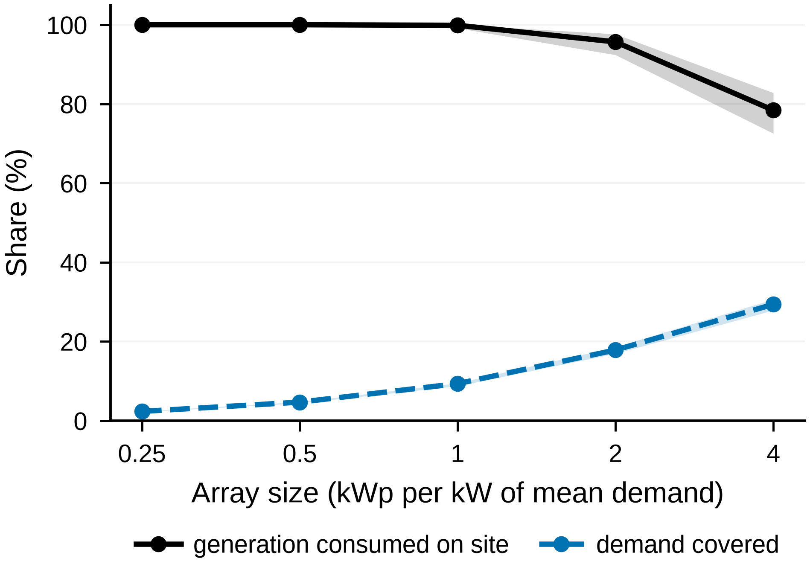
solar_self_consumption PDFGeneration per kWp from ERA5 surface solar radiation at the site (performance ratio 0.8 on the horizontal irradiance; median yield 825 kWh per kWp a year), against each half-hour of 2024/25 at the 106 sites without CHP, for arrays sized relative to the site's mean demand.
| group | size | self_consumption | demand_covered | export_share | value_gbp_kwp_year |
|---|---|---|---|---|---|
| inpatient | 0.25 | 1 | 0.024 | 0 | 56.12 |
| inpatient | 0.5 | 1 | 0.047 | 0 | 56.12 |
| inpatient | 1 | 0.999 | 0.094 | 0.001 | 56.073 |
| inpatient | 2 | 0.962 | 0.181 | 0.038 | 54.602 |
| inpatient | 4 | 0.772 | 0.293 | 0.228 | 45.939 |
| outpatient | 0.25 | 1 | 0.023 | 0 | 55.99 |
| outpatient | 0.5 | 1 | 0.047 | 0 | 55.981 |
| outpatient | 1 | 0.998 | 0.093 | 0.002 | 55.778 |
| outpatient | 2 | 0.953 | 0.175 | 0.047 | 53.432 |
| outpatient | 4 | 0.785 | 0.295 | 0.215 | 46.442 |
source: code/reports/flexibility/solar_summary.csv (10 rows shown)
- Hospitals use everything a roof can make. Up to 1 kWp per kW of mean demand the site consumes all of the generation; at 2 kWp per kW 96 %, at 4 kWp per kW 78 %. Inpatient and outpatient sites are alike: the weekend baseload absorbs the weekend sun.
- The array covers 9 % of demand at 1 kWp per kW, 18 % at 2, 29 % at 4.
- Worth £56 per kWp a year at the wholesale index. Solar hours are 15 % cheaper than the average hour (capture ratio 0.85). The saving on the bill is larger, since a kWh consumed on site also avoids network charges and levies; that part needs the real tariffs.
- For the programme: exports are not the constraint at hospital sites; roof area is.
4. What a forecast is worth: peak shaving (forecast_value, forecast_value_quantile)
Peak shaving is the use where the load forecast matters. A battery (20 % of mean demand, two hours) starts the day full. A threshold is planned from the day-ahead forecast as the lowest import ceiling the battery could hold through the forecast day; the battery then defends that threshold in real time on the actual load. If the forecast is too low the store empties before the peak and the peak comes through; if too high the cut is smaller than it could be. Scored on the 91 sites and 69 test days of the proof of concept (6,107 site-days), for the saved forecasts of each model, against the cut under perfect foresight (11.8 % of the day's peak on average).
Table: 33 rows
| model | plan | nmae_pct | captured_share | peak_cut_pct | perfect_cut_pct | failed_share |
|---|---|---|---|---|---|---|
| seasonal_naive | point | 17.894 | 0.401 | 5.02 | 11.817 | 0.381 |
| profile_quantiles | point | 17.649 | 0.373 | 5.167 | 11.817 | 0.361 |
| profile_quantiles | q60 | 17.649 | 0.367 | 5.147 | 11.817 | 0.36 |
| profile_quantiles | q70 | 17.649 | 0.356 | 4.905 | 11.817 | 0.375 |
| profile_quantiles | q80 | 17.649 | 0.335 | 4.45 | 11.817 | 0.423 |
| profile_quantiles | q90 | 17.649 | 0.271 | 3.475 | 11.817 | 0.512 |
| lightgbm_ifs | point | 12.503 | 0.477 | 5.936 | 11.817 | 0.277 |
| lightgbm_ifs | q60 | 12.503 | 0.493 | 6.441 | 11.817 | 0.232 |
| lightgbm_ifs | q70 | 12.503 | 0.472 | 6.289 | 11.817 | 0.233 |
| lightgbm_ifs | q80 | 12.503 | 0.411 | 5.595 | 11.817 | 0.288 |
| lightgbm_ifs | q90 | 12.503 | 0.354 | 4.616 | 11.817 | 0.38 |
| tabpfn_ts_ifs | point | 11.728 | 0.508 | 6.073 | 11.817 | 0.271 |
| tabpfn_ts_ifs | q60 | 11.728 | 0.528 | 6.542 | 11.817 | 0.233 |
| tabpfn_ts_ifs | q70 | 11.728 | 0.537 | 6.77 | 11.817 | 0.207 |
| tabpfn_ts_ifs | q80 | 11.728 | 0.508 | 6.39 | 11.817 | 0.227 |
| tabpfn_ts_ifs | q90 | 11.728 | 0.407 | 4.912 | 11.817 | 0.327 |
| timesfm3_ifs | point | 11.341 | 0.498 | 6.216 | 11.817 | 0.259 |
| timesfm3_ifs | q60 | 11.341 | 0.532 | 6.689 | 11.817 | 0.215 |
| timesfm3_ifs | q70 | 11.341 | 0.528 | 6.729 | 11.817 | 0.208 |
| timesfm3_ifs | q80 | 11.341 | 0.481 | 6.061 | 11.817 | 0.252 |
| timesfm3_ifs | q90 | 11.341 | 0.36 | 4.314 | 11.817 | 0.393 |
| chronos2 | point | 11.795 | 0.511 | 6.211 | 11.817 | 0.262 |
| chronos2 | q50 | 11.795 | 0.511 | 6.211 | 11.817 | 0.262 |
| chronos2 | q60 | 11.795 | 0.527 | 6.616 | 11.817 | 0.232 |
| chronos2 | q70 | 11.795 | 0.527 | 6.581 | 11.817 | 0.227 |
| chronos2 | q80 | 11.795 | 0.48 | 6.023 | 11.817 | 0.259 |
| chronos2 | q90 | 11.795 | 0.353 | 4.412 | 11.817 | 0.387 |
| chronos2_ifs | point | 11.161 | 0.533 | 6.436 | 11.817 | 0.236 |
| chronos2_ifs | q50 | 11.161 | 0.533 | 6.436 | 11.817 | 0.236 |
| chronos2_ifs | q60 | 11.161 | 0.558 | 6.795 | 11.817 | 0.209 |
| chronos2_ifs | q70 | 11.161 | 0.552 | 6.76 | 11.817 | 0.204 |
| chronos2_ifs | q80 | 11.161 | 0.522 | 6.182 | 11.817 | 0.239 |
| chronos2_ifs | q90 | 11.161 | 0.399 | 4.501 | 11.817 | 0.38 |
source: code/reports/flexibility/forecast_value.csv (33 rows shown)
- The best forecast captures just over half of what is achievable. Seasonal naive 40 %, LightGBM + IFS ENS 48 %, the foundation models 50–53 % (Chronos-2 + IFS ENS 53 %).
- Six points of nMAE are thirteen points of value: from seasonal naive (17.9 % nMAE) to Chronos-2 + IFS ENS (11.2 %).
- Plan on the 60–70 % quantile, not the median. Missing the peak costs the whole cut; aiming high costs a part of it. The 70 % quantile adds about 2 to 3 points for the foundation models (Chronos-2 + IFS ENS 55 %); the 90 % quantile gives up a quarter to a third of the value. That is what the quantile forecasts are for, and it is a modest gain.
- On a fifth to a quarter of site-days the battery achieves next to nothing (under 5 % of its potential) even with the best model: the days whose peak the forecast misses.
5. Design winters (design_winter_sites, design_winter_utilisation, design_winter_budget)
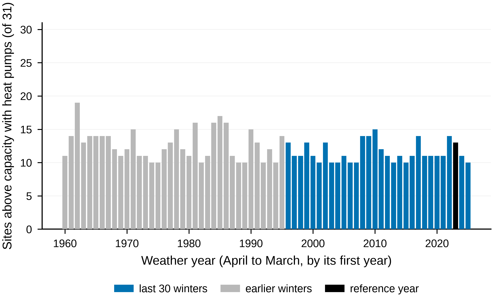
design_winter_sites PDF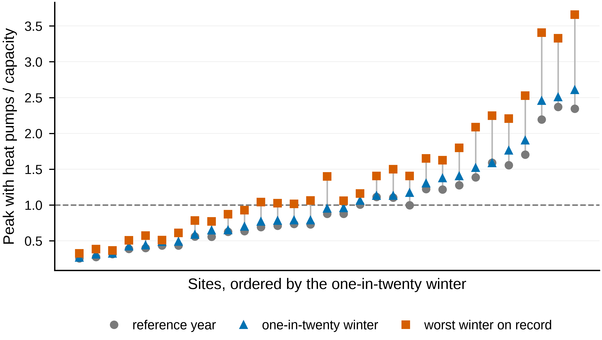
design_winter_utilisation PDF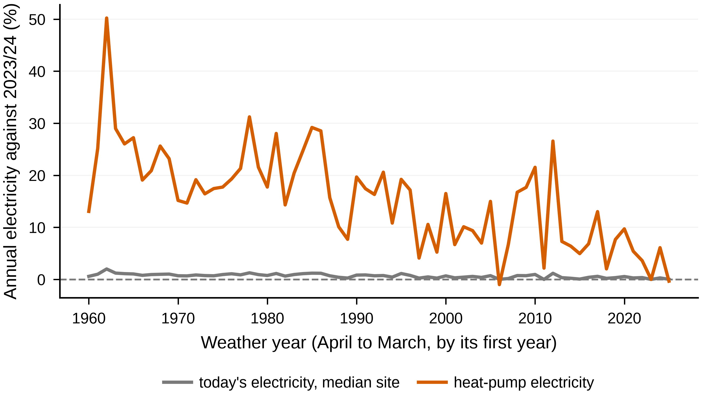
design_winter_budget PDFThe headroom result (13 of 31 sites above their connection with heat pumps) used the weather of 2023/24. Here the same year's demand is re-weathered with each of 66 weather years, April 1960 to March 2026: today's electricity through each site's hourly cold and heat response, the heat-pump load rebuilt from that year's hourly temperature with the headroom model (degree-hours, base share, air-source COP). Two checks: the long temperature record equals the gridded record on their overlap (4,371 site-days, difference 0.0 °C), and the reference year reproduces the headroom peaks to eleven decimal places.
| label | t_winter_mean | t_coldest_day_median | hp_sites_above_capacity | util_hp_median | hp_energy_vs_ref_pct | peak_now_change_median_pct | energy_change_median_pct |
|---|---|---|---|---|---|---|---|
| 1962/63 | -1.07 | -9.56 | 19 | 1.06 | 50.22 | 6.31 | 2 |
| 1978/79 | 1.91 | -5.67 | 15 | 0.92 | 31.23 | 1.29 | 1.27 |
| 2009/10 | 2.66 | -3.45 | 14 | 0.86 | 17.69 | 0.78 | 0.71 |
| 1963/64 | 2.77 | -3.96 | 13 | 0.89 | 28.99 | 0.34 | 1.21 |
| 1984/85 | 2.78 | -5.46 | 16 | 1.01 | 24.77 | 2.57 | 1.11 |
| 1981/82 | 2.85 | -7.9 | 16 | 1.06 | 28.04 | 2.45 | 1.14 |
| 1964/65 | 2.97 | -3.84 | 14 | 0.87 | 26.03 | 0.71 | 1.11 |
| 1995/96 | 3.09 | -3.91 | 14 | 0.83 | 19.22 | 1.22 | 1.14 |
| 1985/86 | 3.16 | -7.07 | 17 | 1.02 | 29.19 | 1.02 | 1.2 |
| 1990/91 | 3.16 | -6.35 | 15 | 0.9 | 19.67 | 1.06 | 0.83 |
| 1968/69 | 3.31 | -4.03 | 12 | 0.93 | 25.63 | 0.08 | 0.98 |
| 1976/77 | 3.43 | -3.31 | 12 | 0.9 | 19.3 | 0.78 | 1.08 |
source: code/reports/design_winter/years.csv (12 rows shown)
- The count barely depends on the winter. 2023/24 was the second-mildest of the last 30 winters (6.8 °C) and puts 13 sites above capacity; the last 30 winters give 10 to 15, the one-in-twenty winter 14, the winter of 1962/63 19. The peak follows the coldest hours of a winter, not its mean, and the sites that exceed their connection do so by a wide margin.
- The margin moves. Peak over capacity at the median site: 0.88 in 2023/24, 0.95 in the one-in-twenty winter, 1.06 in the worst winter on record.
- Today's estate is safe in a cold winter. Without heat pumps the one-in-twenty winter raises the peak by 4 % at the median site and no site passes its capacity.
- Electrification makes the budget weather-sensitive. Across the last 30 weather years today's annual electricity varies by 0.3 % (standard deviation, median site); with heat pumps by 3.0 %. The heat pumps' own electricity ranges from −1 % to +27 % against 2023/24, and +50 % in the weather of 1962/63.
Limits: on the coldest days of the old winters the cold response is extrapolated beyond the temperatures of the demand record (coldest day −3.2 °C at the median site; up to 49 days a year in 1962/63, a handful in recent years), and the old winters are colder than today's climate, which is why the design statistics use the last 30 years.
6. Storage against reinforcement (design_winter_storage)
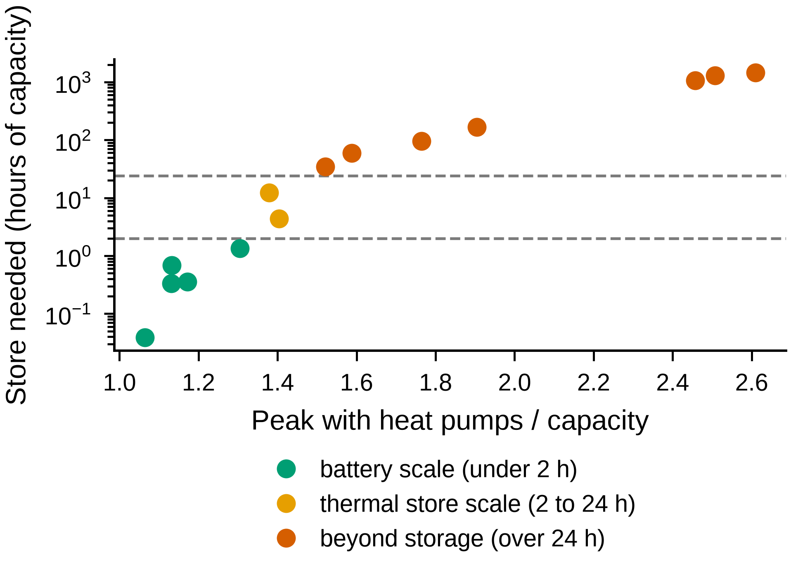
design_winter_storage PDFFor each over-capacity site, the store that would hold it under its connection: power equal to the largest excess, energy equal to the largest run of excess net of recharging below capacity. Classes by the hours of the connection's capacity the store holds (scenario bounds: 2 h and 24 h).
| site_code | capacity_kw | util_hp_ref | util_hp_design | util_hp_worst | worst_year | store_kw_design | store_kwh_design | store_hours_design | hours_over_design | store_class_design |
|---|---|---|---|---|---|---|---|---|---|---|
| RWX51 | 406.6 | 2.34 | 2.61 | 3.66 | 1985/86 | 654.58 | 587614.98 | 1445.19 | 4497.75 | beyond storage (over 24 h) |
| RKB03 | 760 | 2.37 | 2.51 | 3.33 | 1962/63 | 1145.65 | 987571.23 | 1299.44 | 4162.12 | beyond storage (over 24 h) |
| RRECI | 112.1 | 2.19 | 2.46 | 3.41 | 1962/63 | 163.31 | 119802.63 | 1068.71 | 3315.18 | beyond storage (over 24 h) |
| R0A09 | 1425 | 1.71 | 1.9 | 2.53 | 1962/63 | 1288.87 | 239264.41 | 167.9 | 1466.1 | beyond storage (over 24 h) |
| RWR63 | 62.7 | 1.56 | 1.76 | 2.21 | 1962/63 | 47.95 | 6006.64 | 95.8 | 1303.8 | beyond storage (over 24 h) |
| RRE11 | 487.35 | 1.59 | 1.59 | 2.25 | 1962/63 | 286.52 | 29015.69 | 59.54 | 1111.28 | beyond storage (over 24 h) |
| RRECO | 165.3 | 1.39 | 1.52 | 2.09 | 1962/63 | 86.21 | 5731.33 | 34.67 | 706.75 | beyond storage (over 24 h) |
| RM103 | 76 | 1.28 | 1.4 | 1.8 | 1962/63 | 30.69 | 332.89 | 4.38 | 357.6 | thermal store scale (2 to 24 h) |
| RFSDA | 4412.75 | 1.22 | 1.38 | 1.63 | 1984/85 | 1669.88 | 54321.01 | 12.31 | 260.02 | thermal store scale (2 to 24 h) |
| RREA9 | 55.1 | 1.22 | 1.3 | 1.65 | 1962/63 | 16.8 | 74.68 | 1.36 | 74.17 | battery scale (under 2 h) |
| RH8A1 | 60.8 | 1 | 1.17 | 1.41 | 1962/63 | 10.48 | 21.6 | 0.36 | 8.1 | battery scale (under 2 h) |
| RH868 | 76 | 1.1 | 1.13 | 1.5 | 1962/63 | 10.02 | 52.11 | 0.69 | 20.75 | battery scale (under 2 h) |
| R0A06 | 380 | 1.11 | 1.13 | 1.4 | 1962/63 | 49.86 | 126.19 | 0.33 | 11.8 | battery scale (under 2 h) |
| RH879 | 58.9 | 1.01 | 1.06 | 1.16 | 1990/91 | 3.76 | 2.3 | 0.04 | 2 | battery scale (under 2 h) |
| RY424 | 52.25 | 0.88 | 0.96 | 1.06 | 1984/85 | 0 | 0 | 0 | 0 | within capacity |
| RWR13 | 106.4 | 0.88 | 0.95 | 1.4 | 1985/86 | 0 | 0 | 0 | 0 | within capacity |
source: code/reports/design_winter/design_sites.csv (16 rows shown)
- A third can be held with a battery. Of the 14 sites above capacity in the one-in-twenty winter, five need 4 to 50 kW and 2 to 126 kWh; two need a store of 4 and 12 hours of capacity, the scale of a thermal store; seven are beyond storage, above capacity for 700 to 4,500 hours of the year.
- So flexibility closes the gap at the margin and not beyond. The seven need a larger connection or less heat to electrify: fabric, lower flow temperatures, or a hybrid system that keeps gas for the coldest days.
7. Heat pumps in the field (heat_pump_field)
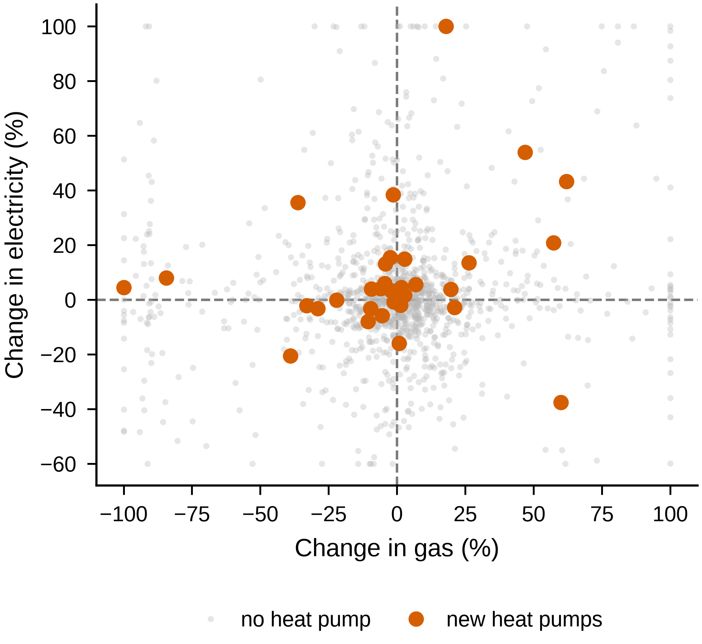
heat_pump_field PDFThe three estates returns (2023/24, 2024/25, 2025/26) give each site's gas, electricity and count of heat pumps. A site that reports its first heat pump in 2024/25 has a full year without it (2023/24) and a full year with it (2025/26); 48 English sites do, 23 of them usable (no CHP, an unchanged floor area, a plausible electricity change, gas in the first year). Sites that never report a heat pump are the comparison.
| pair | status | sites | gas_median_pct | elec_median_pct | gas_did_pct | gas_did_lo | gas_did_hi | elec_did_pct | elec_did_lo | elec_did_hi | gas_fell_fifth_share |
|---|---|---|---|---|---|---|---|---|---|---|---|
| 2023/24 to 2024/25 | never | 1246 | 1.5 | -0.1 | 0.2 | ||||||
| 2023/24 to 2024/25 | had already | 68 | 4.3 | -0.8 | 2.8 | -3.7 | 5.6 | -0.6 | -2.7 | 2.9 | 0 |
| 2023/24 to 2024/25 | new | 33 | -1.4 | 3.9 | -2.9 | -7.4 | 0.9 | 4 | -0.2 | 7.6 | 0.2 |
| 2023/24 to 2024/25 | more | 9 | 0 | 4.7 | -1.5 | -149.4 | 10.4 | 4.7 | -2.6 | 18.3 | 0.3 |
| 2024/25 to 2025/26 | never | 1296 | -5.4 | -1 | 0.2 | ||||||
| 2024/25 to 2025/26 | had already | 80 | -4 | 0.1 | 1.5 | -3.3 | 5.8 | 1.1 | -0.4 | 3.5 | 0.2 |
| 2024/25 to 2025/26 | new | 15 | -16.1 | 5.6 | -12 | -35.1 | -0.5 | 6.5 | -1.4 | 49.4 | 0.5 |
| 2024/25 to 2025/26 | more | 12 | -7.6 | -1.7 | -2.3 | -10.1 | 18 | -0.7 | -6.5 | 8.9 | 0.2 |
| 2023/24 to 2025/26, installed 2024/25 | never | 1128 | -4.6 | -2 | 0.2 | ||||||
| 2023/24 to 2025/26, installed 2024/25 | had already | 41 | -5.4 | -3.3 | -0.9 | -5.2 | 4.9 | -1.3 | -4.9 | 4.5 | 0.2 |
| 2023/24 to 2025/26, installed 2024/25 | new | 23 | -13.1 | 6.5 | -9.4 | -21 | 7.3 | 8.3 | 3.5 | 14.6 | 0.3 |
| 2023/24 to 2025/26, installed 2024/25 | more | 5 | 10.4 | -10.5 | 14.6 | -159.2 | 58.6 | -9 | -17.5 | 67.6 | 0.2 |
source: code/reports/heat_pump_field/did.csv (12 rows shown)
- A full year later the heat pumps show. Against sites without, the 23 sites use 8.3 points more electricity (interval +3.5 to +14.6) and 9.4 points less gas (−21.0 to +7.3, not significant); gas fell by a fifth or more at 35 % of them, against 22 %.
- The installation year hides it. The same question asked within the installation year gives +4.0 points of electricity and −2.9 of gas for 2024/25 (33 sites, neither significant), because the pumps ran for part of the year. The 2025/26 installers (15 sites) already show gas down 12.0 points (−35.1 to −0.5).
- It is partial electrification. A tenth of the gas, not all of it: the typical site added heat pumps to a gas system. With gas at 2.2 times electricity at these sites, a 9 % fall in gas and an 8 % rise in electricity are what a COP near 2 would give; the gas estimate is too uncertain to make that a measurement.
- Thirteen clean switches: a median COP of 2.8. Across the three comparisons 13 sites that report heat pumps cut gas by a quarter or more on an unchanged floor area while electricity rose. Their implied COPs spread from 1.3 to 7.4 (quartiles 1.9 and 6.0), because annual returns are coarse; in the full-year comparison four sit between 2.7 and 3.3 (Horton Hospital, Regent Point, Austen House, Taunton Ambulance Station). The headroom work assumed 2.55.
- Correction to the installation-savings reading. The three panel sites that report heat pumps use 32 % more electricity, but none shows gas being replaced: one has no gas, one kept its gas (−2 %), one changed its reporting sixfold. The 32 % is added electric load, not measured electrification.
Table: 30 rows
| pair | site_name | site_type | status | heat_pumps_b | gas_change_pct | elec_change_pct | implied_cop | reports_heat_pump |
|---|---|---|---|---|---|---|---|---|
| 2023/24 to 2024/25 | ROYAL NATIONAL ORTHOPAEDIC HOSPITAL (BOLSOVER STREET) | Non inpatient | never | 0 | -100 | -48.2 | False | |
| 2023/24 to 2024/25 | CENTRAL HEALTH CLINIC SITE | Non inpatient | never | 0 | -100 | -4.1 | False | |
| 2023/24 to 2024/25 | DELPHWOOD | Non inpatient | never | 0 | -100 | -14.2 | False | |
| 2023/24 to 2024/25 | SIMMONS HOUSE | Mental Health (including Specialist services) | never | 0 | -100 | -40.2 | False | |
| 2023/24 to 2024/25 | MARLBOROUGH HOUSE, EAGLESTONE | Mental Health (including Specialist services) | never | 0 | -100 | -47.8 | False | |
| 2023/24 to 2024/25 | BARNEHURST AMBULANCE STATION | Support Facility | never | 0 | -100 | 0 | 390.2 | False |
| 2023/24 to 2024/25 | FURNESS BUSINESS PARK | Non inpatient | never | 0 | -100 | 31.3 | 22.2 | False |
| 2023/24 to 2024/25 | ROTHESAY | Non inpatient | never | 0 | -100 | 51.4 | 4.7 | False |
| 2023/24 to 2024/25 | SHARPS / LAMBETH NORTH MAP TEAM | Mental Health (including Specialist services) | never | 0 | -100 | 14.5 | 0 | False |
| 2023/24 to 2024/25 | THE PARKWAY CENTRE | Non inpatient | never | 0 | -100 | -5.5 | False | |
| 2023/24 to 2024/25 | SOUTHFIELD | Mental Health (including Specialist services) | new | 1 | -100 | 4.4 | 3.8 | True |
| 2023/24 to 2024/25 | BRAIN INJURY REHABILITATION (SID WATKINS UNIT) | Mental Health (including Specialist services) | never | 0 | -100 | -7.6 | False | |
| 2023/24 to 2024/25 | MILLOM HOSPITAL | Community hospital (with inpatient beds) | never | 0 | -100 | -8.4 | False | |
| 2023/24 to 2024/25 | ALBION PLACE | Non inpatient | never | 0 | -100 | 22.5 | 2.9 | False |
| 2023/24 to 2025/26, installed 2024/25 | WICHELLOWS WHARF (MENTAL HEALTH SERVICES) | Non inpatient | never | 0 | -100 | -41.8 | False | |
| 2023/24 to 2025/26, installed 2024/25 | RESIDENCIES | Non inpatient | never | 0 | -100 | 17.6 | 0.9 | False |
| 2023/24 to 2025/26, installed 2024/25 | DELPHWOOD | Non inpatient | never | 0 | -100 | -11 | False | |
| 2023/24 to 2025/26, installed 2024/25 | PULROSS INTERMEDIATE CARE CENTRE | Community hospital (with inpatient beds) | never | 0 | -100 | 1.8 | 14.4 | False |
| 2023/24 to 2025/26, installed 2024/25 | ROTHESAY | Non inpatient | never | 0 | -100 | 33.1 | 6.8 | False |
| 2023/24 to 2025/26, installed 2024/25 | REGENT POINT | Non inpatient | new | 5 | -100 | 6.6 | 3.1 | True |
| 2023/24 to 2025/26, installed 2024/25 | SOUTHFIELD | Mental Health (including Specialist services) | new | 1 | -100 | -1.6 | 38.2 | True |
| 2023/24 to 2025/26, installed 2024/25 | SHARPS / LAMBETH NORTH MAP TEAM | Mental Health (including Specialist services) | never | 0 | -100 | -57.3 | False | |
| 2024/25 to 2025/26 | CIRTEK HOUSE | Mental Health (including Specialist services) | never | 0 | -100 | 103.8 | 0 | False |
| 2024/25 to 2025/26 | SCAS LOGISTICS & PHARMACY UNIT | Support Facility | never | 0 | -100 | 6.3 | 7.2 | False |
| 2024/25 to 2025/26 | WICHELLOWS WHARF (MENTAL HEALTH SERVICES) | Non inpatient | never | 0 | -100 | -42.4 | False | |
| 2024/25 to 2025/26 | RESIDENCIES | Non inpatient | never | 0 | -100 | 10.2 | 0.3 | False |
| 2024/25 to 2025/26 | PULROSS INTERMEDIATE CARE CENTRE | Community hospital (with inpatient beds) | never | 0 | -100 | -7.6 | False | |
| 2024/25 to 2025/26 | THE LIFE ROOMS | Non inpatient | new | 1 | -100 | 63.6 | 2 | True |
| 2024/25 to 2025/26 | REGENT POINT | Non inpatient | had already | 5 | -100 | -1.2 | True | |
| 2024/25 to 2025/26 | CAMDEN KENTISH TOWN CORE TEAM | Non inpatient | never | 0 | -100 | 12.9 | 10.8 | False |
source: code/reports/heat_pump_field/switchers.csv (30 rows shown)
The 2025/26 return (published 15 October 2026, site table in its second version) was downloaded
by hand, because its page refuses scripted requests, and is loaded with
sense-energy build-eric --year 2025_26.
8. The solar programme from the meter and the returns (solar_programme_spring, solar_programme_returns, solar_metered_vs_reported)
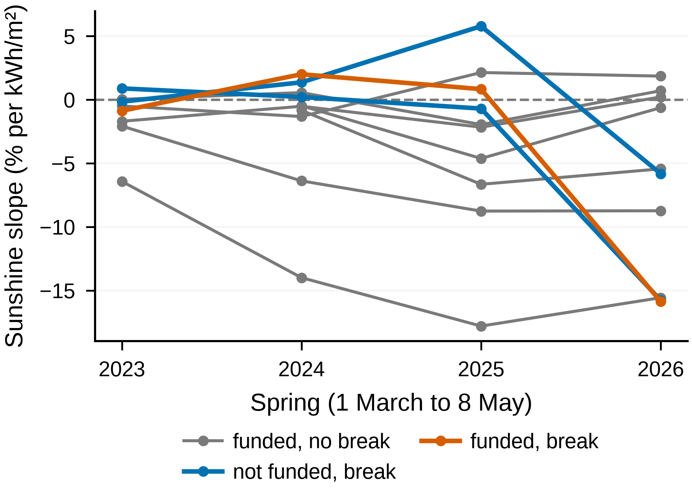
solar_programme_spring PDF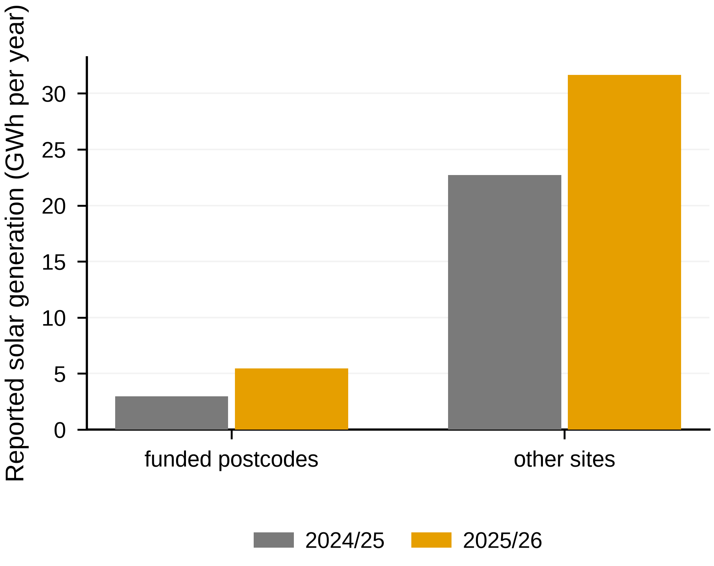
solar_programme_returns PDF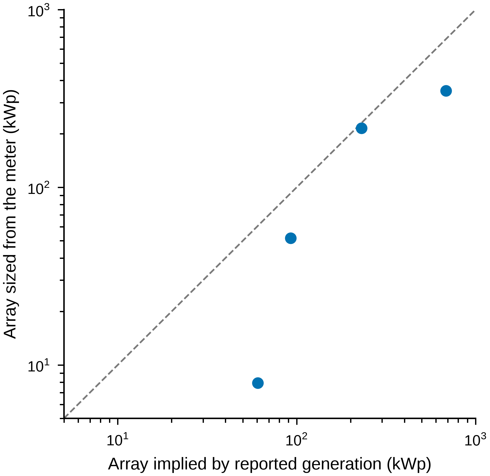
solar_metered_vs_reported PDFGreat British Energy's first project funds rooftop solar at NHS sites: £100 million for 181 site postcodes in 78 trusts, announced on 21 March 2025. Two views of it: the estates returns, for every funded site in England, and the meter, for the ten panel sites on the list.
In the returns. 142 of the funded postcodes match a site in both the 2024/25 and 2025/26 returns (217 sites).
- Funded sites report 84 % more solar generation in 2025/26, 3.0 to 5.5 GWh, against 39 % at all other sites (22.7 to 31.7 GWh). They are 8 % of the sites and 22 % of the national increase.
- 22 of the 142 funded postcodes show new or grown generation by March 2026; 44 report any solar, 35 the year before. Most of the programme is still to appear: the return's year ends a year after the announcement, and an array switched on during the year reports a part-year.
| site_name | trust_code | site_type | funded | solar_generated_kwh_a | solar_generated_kwh_b | added_kwh | new | grew |
|---|---|---|---|---|---|---|---|---|
| SOUTHAMPTON GENERAL HOSPITAL | RHM | General acute hospital | False | 62232 | 1650451 | 1588219 | False | True |
| NEW CROSS HOSPITAL | RL4 | General acute hospital | False | 3754011 | 5244405 | 1490394 | False | False |
| ROBERT JONES & AGNES HUNT ORTHOPAEDIC HOSPITAL | RL1 | Specialist hospital (acute only) | True | 843105 | 172919 | 886085 | False | True |
| EASTBOURNE DISTRICT GENERAL HOSPITAL | RXC | General acute hospital | False | 0 | 836181 | 836181 | True | False |
| NORTH TYNESIDE GENERAL HOSPITAL | RTF | General acute hospital | False | 3791 | 712358 | 708567 | False | True |
| SALISBURY DISTRICT HOSPITAL | RNZ | General acute hospital | False | 231245 | 865266 | 634021 | False | True |
| ROYAL SURREY COUNTY HOSPITAL | RA2 | General acute hospital | True | 5522 | 346314 | 340792 | False | True |
| HELLESDON HOSPITAL | RMY | Mental Health (including Specialist services) | False | 36 | 350113 | 314113 | False | True |
| GREAT WESTERN HOSPITAL | RN3 | General acute hospital | False | 0 | 280723 | 280723 | True | False |
| TEWKESBURY GENERAL HOSPITAL | RTQ | Community hospital (with inpatient beds) | False | 1514 | 265331 | 250191 | False | True |
| NORTHERN GENERAL HOSPITAL | RHQ | General acute hospital | True | 264829 | 5128 | 247971 | False | True |
| NORTHGATE HOSPITAL | RX4 | Mental Health and Learning Disabilities | False | 78766 | 32499 | 246224 | False | True |
| UNIVERSITY HOSPITAL AINTREE | REM | General acute hospital | True | 0 | 238056 | 238056 | True | False |
| BIRMINGHAM WOMEN'S HOSPITAL | RQ3 | Specialist hospital (acute only) | False | 13109 | 232625 | 219516 | False | True |
| HORTON HOSPITAL | RTH | General acute hospital | False | 0 | 208794 | 208794 | True | False |
| WATFORD GENERAL HOSPITAL | RWG | General acute hospital | False | 23264 | 432005 | 199365 | False | True |
| TRUST HQ, SOWTON INDUSTRIAL ESTATE, EXETER | RYF | Support Facility | False | 12259 | 198466 | 186207 | False | True |
| WARWICK HOSPITAL | RJC | General acute hospital | False | 2461 | 200683 | 176073 | False | True |
| HEARTLANDS HOSPITAL | RRK | General acute hospital | False | 127175 | 292575 | 1654 | False | True |
| FOREST OF DEAN COMMUNITY HOSPITAL | RTQ | Community hospital (with inpatient beds) | False | 0 | 163 | 163 | True | False |
| ST HELENS HOSPITAL | RBN | General acute hospital | False | 12414 | 170085 | 157671 | False | True |
| HOSPITAL OF ST CROSS | RKB | General acute hospital | False | 0 | 148027 | 148027 | True | False |
| UNIT 7/8, SILVER FOX WAY, COBALT BUSINESS PARK | RTF | Non inpatient | False | 0 | 134107 | 134107 | True | False |
| FREEMAN HOSPITAL | RTD | Specialist hospital (acute only) | True | 0 | 11072 | 11072 | True | False |
| CALLINGTON ROAD HOSPITAL | RVN | Mental Health (including Specialist services) | False | 187901 | 297885 | 109984 | False | True |
source: code/reports/solar_programme/returns_check.csv (25 rows shown)
At the meter. The sunshine slope is estimated on a spring window (1 March to 8 May) for 2023 to 2026, and the spring of 2026 is compared with the spring of 2025 and with the spring of 2024, the last one before the programme (an array switched on during 2025 already shows in spring 2025). Eight of the ten funded panel sites are testable.
| site_code | site_name | group | trust_funding_gbp | sun_2024_pct | sun_2025_pct | sun_2026_pct | change_since_baseline_pct | z_since_baseline | break_any | day_kw | implied_kwp_since_baseline | eric_solar_mwh_before | eric_solar_mwh_after |
|---|---|---|---|---|---|---|---|---|---|---|---|---|---|
| RQXM1 | Homerton University Hospital | 1413000 | 0 | 0 | |||||||||
| RD130 | Royal United Hospital | 295000 | 51.4 | 102.6 | |||||||||
| R0A07 | Wythenshawe Hospital | on-site CHP | 2076000 | -6.4 | -8.8 | -8.7 | -2.4 | -2.7 | True | 175.6 | 61.9 | 380.9 | 441.6 |
| R0A02 | Manchester Royal Infirmary | outpatient | 2076000 | -1.3 | 2.1 | 1.9 | 3.2 | 3.2 | False | 47.7 | -22.7 | ||
| RWR62 | The Stewarts | outpatient | 300000 | 2 | 0.8 | -15.9 | -17.9 | -4.3 | True | 5 | 13.5 | ||
| RQY08 | Tolworth Hospital | inpatient | 296000 | -0.5 | -2.2 | 0.2 | 0.7 | 0.3 | False | 150.4 | -16.5 | 0 | 0 |
| RL131 | Robert Jones & Agnes Hunt Orthopaedic Hospital | on-site CHP | 2407000 | -14 | -17.8 | -15.6 | -1.6 | -0.4 | False | 390.9 | 92.5 | 843.1 | 1729.2 |
| RYEA8 | Winchester & Eastleigh Resource Centre | outpatient | 1193000 | -0.8 | -6.7 | -5.4 | -4.6 | -2.9 | True | 7.1 | 4.9 | 0 | 54 |
| RYEH2 | Didcot Workshop | outpatient | 1193000 | -0.5 | -4.6 | -0.6 | -0.1 | -0.1 | False | 5.5 | 0.1 | 0 | 0 |
| RFSDA | Chesterfield Royal Hospital | inpatient | 6581000 | 0.6 | -2 | 0.7 | 0.1 | 0.1 | False | 1660.6 | -37.3 | 0 | 0 |
source: code/reports/solar_programme/funded_sites.csv (10 rows shown)
- Three funded sites show their panels: The Stewarts (slope +2.0 to −15.9 % per kWh/m², z = −4.3, 13 kWp of self-consumed generation), Winchester and Eastleigh Resource Centre (−0.8 to −5.4, z = −2.9) and Wythenshawe Hospital (−6.4 to −8.7, z = −2.7, 62 kWp).
- The returns agree where both speak. Wythenshawe reports 61 MWh more generation, about 70 kWp, against 62 kWp from the meter; Winchester and Eastleigh reports its first 54 MWh. The three testable funded sites that report no solar (Chesterfield Royal, Tolworth, Didcot) show nothing at the meter either. Chesterfield Royal has the largest award (£6.6 million); an array of 0.9 MWp would be visible there, and by 8 May 2026 none is.
- The meter measures the solar a site consumes. Robert Jones and Agnes Hunt doubled its reported generation (843 to 1,729 MWh) and the meter shows no change: a CHP site whose import is already near zero on sunny days exports the rest. A break of the slope is a size: panels of k kWp lower daytime demand by k × 0.8 / 12 kW per kWh/m². At St George's Hospital the meter gives 215 kWp against 230 kWp implied by the generation the return reports; where the array is larger than the daytime load the meter sees only the part consumed on site: 52 of 93 kWp at Potters Bar, 349 of 684 kWp at Bridlington, 8 of 61 kWp at Church Hill House.
- Sites off the list break as well: St Paul's Hemel Hempstead, Mardon House, 99 Waverley Road, Royal Leamington Spa, London House and Little Plumstead, sized at 15 to 200 kWp.
- Short windows are noisy. Against spring 2024, nine sites break downwards and eleven upwards, the upward ones up to z = 3.7. The five downward breaks at z = −4 or beyond stand on their own; Wythenshawe and Winchester are within the noise and rest on the returns' confirmation.
| site_code | site_name | change_pct | day_kw | implied_kwp | implied_kwp_level | eric_solar_mwh_2024_25 | eric_total_kwp | metered_share_of_reported |
|---|---|---|---|---|---|---|---|---|
| RKB03 | Hospital Of St Cross | -2.5 | 386.9 | 143.3 | 144 | 0 | 0 | |
| RRE11 | St.georges Hospital | -4.9 | 161.8 | 118 | 215 | 177.5 | 230.1 | 0.9 |
| RYX37 | Potters Bar Community Hospital | -15.3 | 22.2 | 51.1 | 51.8 | 76.5 | 92.7 | 0.6 |
| RY412 | Queen Victoria Memorial Hospital | -16.7 | 7.8 | 19.6 | 21.3 | 0 | 0 | |
| RWRD7 | 99 Waverely Road | -7.8 | 16.3 | 19.1 | 18.3 | 0 | 0 | |
| RWR58 | St Pauls (hemel Hempstead) | -17.5 | 3.6 | 9.3 | 10 | |||
| RWX58 | Church Hill House | -9.5 | 5 | 7.1 | 7.9 | 50.2 | 60.7 | 0.1 |
| RWR78 | Adult Mental Health Unit (hampden House) | -6.4 | 4.3 | 4.1 | 4.7 | 0 | 0 | |
| RCBNH | Bridlington Hospital | 4.6 | 119.7 | -83.2 | 349.1 | 590.7 | 683.8 | 0.5 |
source: code/reports/solar_programme/summer_measured.csv (9 rows shown)
9. What this changes
- The headroom finding stands in a cold winter and gets a second half: a battery solves it at a third of the over-capacity sites, reinforcement or less heat at the rest.
- Forecast accuracy has a price tag now: the share of an achievable peak cut it captures. The quantile forecasts earn 2 to 3 points of it.
- The value of a battery is a question about the tariff. The next step is the real distribution charges per network area and voltage.
- The estates returns do measure heat pumps once a full year is compared with a full year: 8 points more electricity, about a tenth less gas. They show partial electrification, which is a smaller load than the headroom scenario of replacing all gas heat.
- The solar programme can be followed two ways: the returns for every funded site, the meter for the date and the self-consumed size. By March 2026 a sixth of the funded postcodes show it.
Figures
bill_shape_premium, battery_value, solar_self_consumption, forecast_value,
forecast_value_quantile, design_winter_sites, design_winter_utilisation,
design_winter_budget, design_winter_storage, heat_pump_field, solar_programme_spring,
solar_programme_returns, solar_metered_vs_reported.
bill_shape_premium PDFbattery_value PDFsolar_self_consumption PDFforecast_value PDFforecast_value_quantile PDFdesign_winter_sites PDFdesign_winter_utilisation PDFdesign_winter_budget PDFdesign_winter_storage PDFheat_pump_field PDFsolar_programme_spring PDFsolar_programme_returns PDFsolar_metered_vs_reported PDF